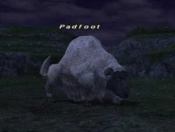

Level 75 reference · Zenith rules
|
Family: Sheep Notorious Monster |
 |

| Zone | Level | Drops | Steal | Spawns |
Notes |
|---|---|---|---|---|---|
|
45-46 |
5 |
L | |||
|
HP = Detects Low HP; M = Detects Magic; Sc = Follows by Scent; T(S) = True-sight; T(H) = True-hearing JA = Detects job abilities; WS = Detects weaponskills; Z(D) = Asleep in Daytime; Z(N) = Asleep at Nighttime | |||||
Notes
- Five copies of this NM spawn approximately every 21-24 hours. One copy will spawn at each of the following areas: (F-7), (G-7)-(H-8), (H-9), (I-8)-(I-9), and (K-9).
- Spawns in 30 min windows (similar to Fafnir) at every 30 min interval from 21 to 24 hrs (i.e. 21:00, 21:30, 22:00, etc). Each window is approximately 10-20 seconds.
- Links with, and is linked by, Tavnazian Sheep.
- Either an Assailant's Ring or an Astral Earring will always drop from one of the Padfoot, but the Padfoot that they drop from is random. When one of the items drops from a Padfoot, any unclaimed Padfoot copies immediately despawn.
- Soloable by most jobs at level 53.
Adapted from Eden Wiki: Padfoot · Contributors and history · CC BY-SA 4.0. Revision 47083. Layout, links and optional background text adapted for Zenith.